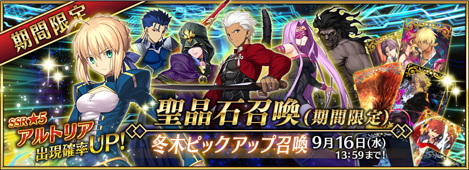

◆キャンペーン期間:2015年9月9日(水) 16:00 ～ 9月16日(水) 13:59
聖晶石召喚にて、特異点F「冬木」にまつわるサーヴァント「アルトリア」「エミヤ」など、ピックアップされた6騎の出現確率がUP！10回召喚では★4（SR）以上1枚確定と★3（R）以上のサーヴァント1騎確定！
※★4（SR）以上確定にはサーヴァントと概念礼装が含まれます。
◆ピックアップサーヴァント◆
★★★★★SSR セイバー
アルトリア・ペンドラゴン
MAX ATK 11221 MAX HP 15150宝具 約束された勝利の剣（エクスカリバー）
★★★★SR アーチャー
エミヤ
MAX ATK 9398 MAX HP 11521宝具 無限の剣製（アンリミテッドブレイドワークス）
★★★★SR バーサーカー
ヘラクレス
MAX ATK 10655 MAX HP 10327宝具 射殺す百頭（ナインライブズ）
★★★R ランサー
クー・フーリン
MAX ATK 7239 MAX HP 9593宝具 刺し穿つ死棘の槍（ゲイ・ボルク）
★★★R ライダー
メドゥーサ
MAX ATK 7200 MAX HP 8937宝具 騎英の手綱（ベルレフォーン）
★★★R キャスター
メディア
MAX ATK 7418 MAX HP 8643宝具 破戒すべき全ての符（ルールブレイカー）